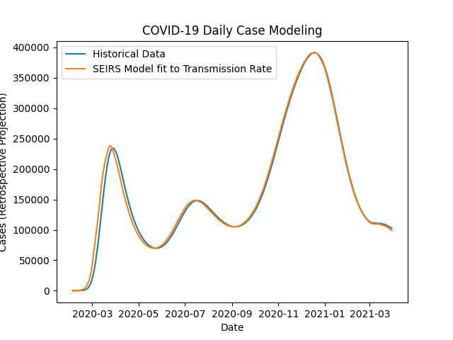
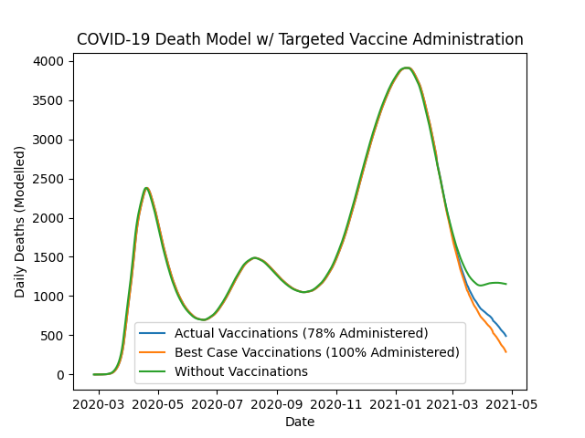

Vaccine Distribution Challenge
Northeastern's DATA Club Challenge to visualize, model, and analyze the impact of US Vaccine Distribution efforts.
Abstract
Our approach focuses on modeling the quantitative impact of vaccination on COVID-19 case and death counts as well as analyzing current and potential distribution infrastructure across the United States. The pandemic is modeled via a dynamic SEIR model with varying transmission rates fit to historical case data provided by the Institute for Health Metrics and Evaluation of the University of Washington. The fatality data are generated using an overall fatality rate of 1% and the impact of vaccinations is explored by fitting a 4% mean fatality rate to those who have been vaccinated. The model indicates that while the vaccine has only reduced the daily number of new cases by 10-15%, it has prevented upwards of 25% of the daily deaths. It also revealed that if the US had administered 100% of our vaccine supply instead of 78%, we would have already been saving an additional 100 lives every day.
To help inspire solutions, an interactive Tableau Dashboard displays potential COVID-19 vaccination sites on a national level. Since there is no federal organization on vaccination sites, the worksheet shows all CVS pharmacies, Walmart superstores, indoor arenas and outdoor stadiums in the United States to highlight the existing infrastructure. Each state is given a ranking based on the number of sites, which can be compared with its relative population. While this is not a cure-all, examining these ratios as well as counties devoid of possible vaccination sites can give policymakers a better understanding of the geographical and logistical challenges hindering vaccination progress and costing lives.
Fitting Model

Model Compared to Historical Data
Modelled Results of Early Targeted Vaccination Efforts
See full methodology on GitHub